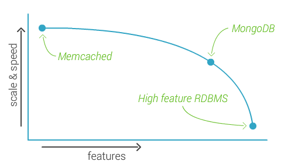
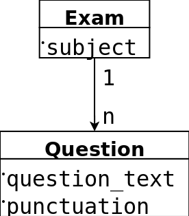

Porque mola mucho
by David Zaba
dpzaba at gmail dot com
dpzaba.com
CiudadReal-rb
Agile-CR
Hola!
- David Zaba
- Ingeniero en Informática
- UCLM -> Bizneo -> ?
¿Qué es?
- NoSQL
Open Source & C++ - Documentos
JSON* estructura libre -> BSON - Índices
- Replicación y alta disponibilidad
- Auto-Sharding
- Map/Reduce
- GridFS ( > 16 MB)
- $oporte ...
¿Dónde estamos?
Conceptos
- Database
- Collection
- Document
- Field
- Index
- Aggregation pipeline
¿Qué le falta?
- Joins
- Integridad referencial
- Transacciones
- ...
Code inside!
Install
sudo apt-get install mongodb
# official repositories:
# mongodb-10gen
david:~$ mongo
MongoDB shell version: 2.4.9
connecting to: test
>
JSON
{
_id: ObjectID("509a8fb2f3f4948bd2f983a0"),
// 12 bytes: timestamp + m_id + p_id + counter
name: "David",
age: 24,
status: "A"
}
Insert
db.users.insert( {
name: "David",
age: 24,
status: "A"
} )
db.users.save( {
name: "David",
age: 24,
status: "A"
} )
Select
db.users.find(
{ status: "A" },
{ name: 1, status: 1, _id: 0 }
)
db.users.find(
{ name: /David.*/i }
)
Select II
db.users.find(
{ age: { $gt: 21 } }
)
db.users.find(
{ $or: [ { status: "A" }, { age: 24 } ] }
)
Update
db.users.update(
{ age: { $gt: 25 } },
{ $set: { status: "C" } },
{ upsert: true, multi: true }
)
db.users.save( {
_id: 7,
user_id: "David",
age: 24,
status: "A"
} )
Delete
db.users.remove( { status: "D" }, true ) //justOne
Asociaciones
Reference
/* Exam */
{
_id: 1,
subject: "Redes",
questions: [ 5, 7, 9]
}
/* Question */
{
_id: 5,
puctuation: 1.5,
question_text: "Diferencias entre TCP y UDP"
}
Embedded
/* Exam */
{
_id: 1,
subject: "Redes",
questions: [
{
punctuation: 1.5,
question_text: "Diferencias entre TCP y UDP"
},
{
punctuation: 1,
question_text: "¿Qué es un enrutador IP?"
},
...
]
}
¿Cuál utilizar?
- Depende de tu modelado de datos
- ¿?
- ¿Acceder a cada modelo?
- ¿Relaciones recíprocas entre modelos?
- ¿Jerarquía entre modelos?
Backups
- MMS
- Filesystem Snapshots
- mongodump & mongorestore
- mongoimport & mongoexport
Otras características
- Gestión usuarios básica
- Índices
- Simples
- Compuestos
- Multikey ~ Array
- Hash
- Geoespacial
- Texto Unique, Sparse, TTL
- Compresión datos
Ruby + MongoDB
- Ruby driver
- MongoId
- MongoMapper
- ...
Ruby Driver
# Conex ...
# collection users
users = db["users"]
users.count
users.insert(:name => "David")
users.find({_id: 7}, :fields => ["name", "email"])
users.find.each { |user| puts user.inspect }
users.update({_id: 7}, {:$set => { :name => "Zaba" }})
users.remove(:name => "David")
MongoMapper
class User
include MongoMapper::Document
key :name, String
key :age, Integer
end
#
User.create(:name => "David")
User.where(id: 7).fields(:name,:email)
MongoMapper
class Exam
include MongoMapper::Document
key :subject, String
many :questions
end
class Question
include MongoMapper::Document
# include MongoMapper::EmbeddedDocument
key :question_text, String
key :punctuation, Integer
belongs_to :exam
end
MongoMapper
vs.
MongoId
- MongoId
- Soporte gemas
- Comunidad (5,8k vs. 1,8k commits)
- + Funcionalidades implementadas
- Menos fallos
- MongoMapper
- ~ ActiveRecord
- Más simple
Secretos oscuros
- SSOO 32bits -> Tamaño max: 2 GBytes
- Preallocate: 2n [64MB - 2GB]
- Tamaño en disco se dispara con índices
- BSON -> tamaño varía: nombres de campos y mayúsculas
Secretos oscuros II
- MongoShell: Ctrl+C
- Wrong UTF-8: ordenación
- Full-text: beta
- Skip: ¡secuencial!
- Map/Reduce: Js, 1 hilo
Consejos
- ¿Lo necesitas? -> SQL + MongoDB
- Índices + "working set" en RAM
- Refactorizaciones son caras y peligrosas
- Sharding!! SSD + CPU
- Nombres de campos cortos y minúsculas
Consejos II
- S.O. 64 bits
- Búsquedas
- Find
- Aggregation Framework
- Map/Reduce
- Denormalizar + duplica datos < rendimiento